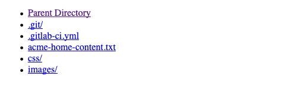

Change Notifications
Steps
- Log into your GitLab account. If you are already logged go to the upper-right corner and click on your profile picture.
- Once the menu appears click "Settings".
- Locate the sidebar on the left and click "Notifications".
- In the right panel, click on the "Global" dropdown belonging to your "acme" repository.
- Select the "Custom" selection. Modify the selections until only "Close merge request" and "Merged merge request" are checked.
Clone a GitLab Repository
This document outlines the steps needed to create a local repository from your GitLab repository. That means you are going to create a copy of your GitLab repository locally so you can make changes. The term for this process is cloning. You will use Visual Studio Code to clone your "acme" repository.
Prerequisites:
- XAMPP (Windows or Mac)
- GitLab Account
- Visual Studio Code
Add SSH Key
Use an existing SSH Key
Windows
- Open the Windows explorer and navigate to
C:\Users\your_username\.ssh - Right-click on
id_rsa.puband click on "Open". Skip to "Create a New Key" below if file does not exist. - Choose Notepad when asked which program to open the file.
- Copy the entire file contents.
Mac
- Open a terminal window.
- Type
cat ~/.ssh/id_rsa.pub - Skip to "Create a New Key" below if nothing is output
- Copy the entire output.
Create a New Key
- Open a terminal window. In Windows, press Win+R to open the Run dialog. Type cmd and press Enter.
- Type
ssh-keygen -o -t rsa -b 4096 -C "email@example.com"
Replace email@example.com with your email address. - Press the "Enter" key until the key is generated.
-
Windows
- Open the Windows explorer and move to
C:\Users\your_username\.ssh - Right-click on
id_rsa.puband click on "Open". - Choose Notepad when asked which program to open the file.
- Copy the entire file contents.
- Open the Windows explorer and move to
-
Mac
-
Type
cat ~/.ssh/id_rsa.pub - Skip to "Create a New Key" below if nothing is output.
- Copy the entire output of the file's contents.
-
Type
Paste into GitLab
- Log into your GitLab account. If you are already logged go to the upper-right corner and click on your profile picture.
- Once the menu appears click "Settings".
- Locate the sidebar on the left and click "SSH Keys".
- Paste your SSH Key into the textbox.
- Enter a title.
- Click "Add key" button.
Copy GitLab repository URL
- Log into your GitLab account. If you are already logged go to the upper-left corner and click the GitLab logo. This will take you to your project list.
- When the project list loads click on your "acme" project.
- To the right, click the blue "Clone" button
- A small popup will display. Click the copy button next to the 1st textbox (Clone with SSH).
- You now have the URL you need to connect Visual Studio Code to GitLab.
Using VS Code to Clone your Repository
In the next video when GitHub is mentioned, replace it with GitLab and try to follow the steps. The steps may not perfectly align, but they are very similar. These are the differences.
- Instead of pasting a GitHub URL, use the GitLab URL that you just copied.
- Your root folder is /xampp/htdocs on Windows and Applications/XAMPP/htdocs on Mac (press ⌘+Shift+G to type in the folder)
- You will have the "acme" starter assets but no README.md in your folder.
Starts at 2:22 mark
Notice!
Those familiar with Git having used GitHub may try to push a new file to GitLab to test the connection. Do not attempt this. An error message will result since the master branch is protected. The master branch may only be modified by merged merge requests.Test
- Ensure XAMPP is running.
- Open your web browser and enter http://localhost/[BYU-I username]-acme
- Once loaded you should see a listing of your repository contents. 
Troubleshooting
When connecting VS Code to GitLab, you may get the error
command git.clone not found. This means that Git software
needs to be installed. The installers mentioned in the videos are
available at
http://www.git-scm.com.
Note: After the installation finishes, you need to restart Visual
Studio Code.